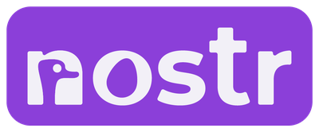

Cette application web te permet de configurer tes relais Nostr et de mettre à jour tes listes publiques :
- Relais de lecture (R) et d’écriture (W) d’événements Nostr ;
- Relais de recherche (S), compatibles NIP-50, pour les événements et profils Nostr ;
- Relais de réception de messages privés (DM), compatibles NIP-17.
Connecte ton compte Nostr
• Nécessite un signer (signataire) de type « extension de navigateur » compatible NIP-07 (Alby Extension, Nostr Map Signer, Nostash…).
• Ta clé privée (nsec) reste gérée par ton extension. L’application n’y accède pas et lui délègue les signatures.
• Tu peux rechercher et installer un signer compatible en consultant la rubrique Ressources Nostr > Signers (signataires) Nostr de Libestria.
Compte connecté à l’application
Relais actuellement configurés
• 0 relais en lecture (R). Ce sont les relais sur lesquels tu récupères les événements Nostr.
• 0 relais en écriture (W). Ce sont les relais sur lesquels tu publies tes événements Nostr.
• 0 relais de recherche (S) compatibles NIP-50. Ce sont les relais utilisés pour rechercher des événements et des profils Nostr.
• 0 relais de messagerie privée (DM) compatibles NIP-17. Ce sont les relais sur lesquels tu reçois les messages privés Nostr qui te sont destinés.
Ajouter un relais
Pour ajouter un relais, tu peux saisir directement son adresse ou bien en choisir un parmi les suggestions.